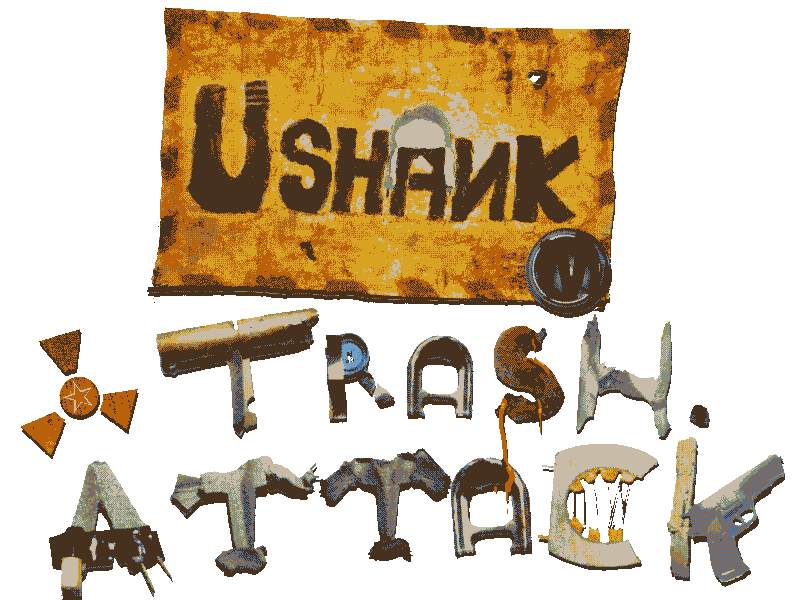
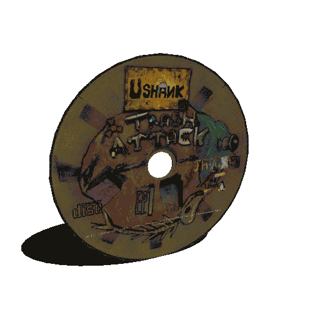
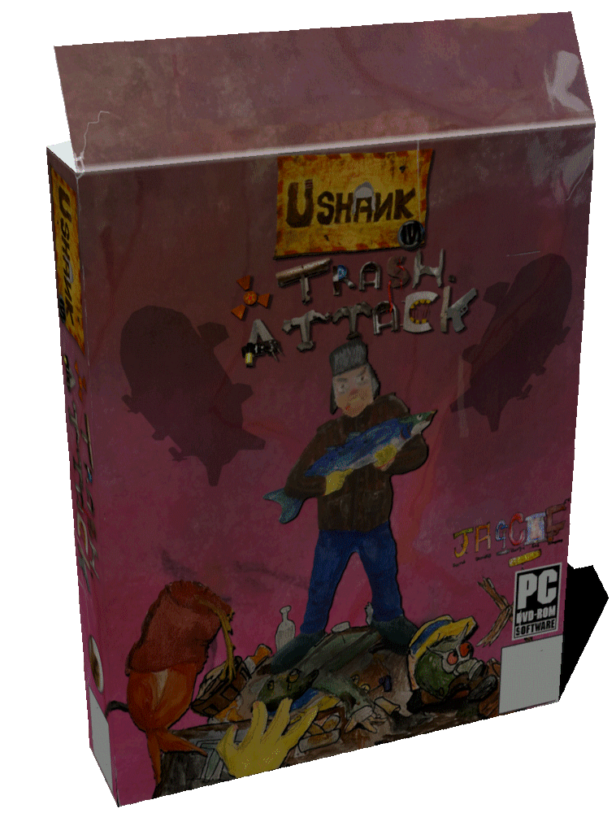

USHANK IN TRASH ATTACK!!!
A JAGCAC CREATION!
A JAGCAC CREATION!
"Madness for you" - Jarrod
"Geiger but cartoony" - Lucas
"High Pitched" - Billie

A Steampunked nostalgia fuelled, post soviet, Australian meets slavjank shooter,
OZJANK!
PERFECT for Generation Z whom likes crude humour, and atmospheric storytelling.

Will you (as Ushank) succeed, or end up in a hangover???
Because:
ITS. TIME. TO. TAKE. OUT. THE. TRASH!!!!!




First episode on itch.io if you want ;)
legal stuff: music by Alexandr Zhelanov from https://opengameart.org/content/in-russian-style